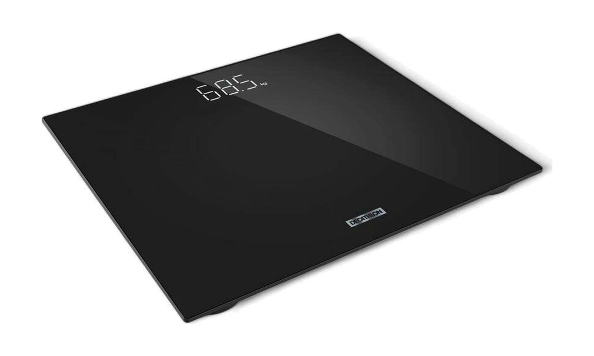

Decathlon · Scale 100
Báscula de cristal
Lectura de ejemplo
0,0kg

Seguimiento semanal
Báscula
corporal
corporal
El dato más fácil de registrar cada día
Cómo leerla
Mira la tendencia, no el día
● El dato diario
Sube y baja por agua, sal, comida o descanso
━ La media semanal
Te dice hacia dónde vas de verdad
Su gran limitación
Un número que lo mezcla todo
68,5kg
Grasa
Lo que quieres perder
?
Músculo
Lo que quieres ganar
?
Agua
Varía cada día
?
Digestión
Comida en tránsito
?
La báscula suma todo. No distingue qué ha cambiado.
Para todos los clientes
La base de tu seguimiento